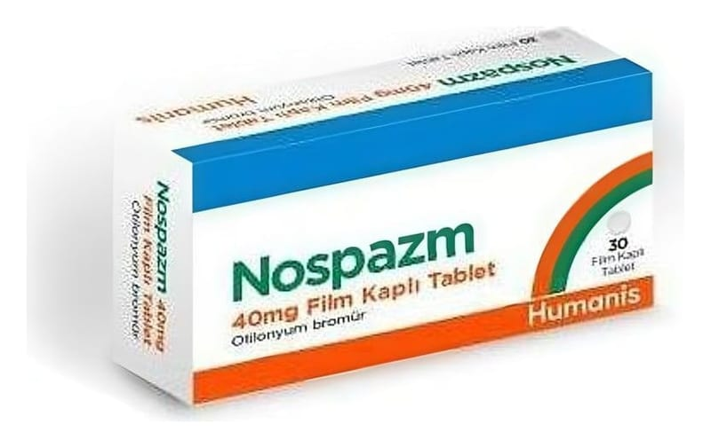

Nospazm 40 mg Film Kaplı Tablet, 30 Adet

Ne için kullanılır
KT · Bölüm 1NOSPAZM, beyaz ile beyazımsı renkte, yuvarlak, bikonveks film kaplı tablettir.
NOSPAZM, otilonyum bromür içerir ve otilonyum bromür “antispazmotik” (spazm giderici) olarak adlandırılan bir ilaç grubuna dahildir.
İçeriğinde bulunan laktoz monohidrat inek sütü kaynaklıdır.
NOSPAZM sindirim kanalındaki kaslar üzerine etki eder, barsak spazmlarını hafifletir ve aşırı motilitesini (barsak kaslarının aşırı büzülmesini ve hızını kontrol etmek gibi) düzenler.
NOSPAZM, irritabl barsak sendromunda ve ağrılı barsak spazmları, gerilme ve hareket problemleri ile karekterize olan diğer sindirim sistemi koşullarında kullanılır.
NOSPAZM, 30 ve 90 film kaplı tablet içeren kutularda sunulmaktadır. 2.NOSPAZM kullanmadan önce dikkat edilmesi gerekenler NOSPAZM'ı aşağıdaki durumlarda KULLANMAYINIZ: Eğer; Otilonyum bromür ya da NOSPAZM’ın içeriğindeki yardımcı maddelerden herhangi birine karşı alerjiniz (aşırı duyarlılık) varsa Kolon tıkanması durumu varsa
NOSPAZM'ı aşağıdaki durumlarda DİKKATLİ KULLANINIZ: Eğer; Glokom varsa (göz küresindeki basıncın arttığı bir göz hastalığı) Prostat bezinde büyümeniz varsa (prostatik hipertrofi olarak da bilinir) Mideden barsağa geçen kanalda daralmanız varsa (pilorik stenosis) Barsak tembelliği (atoni) sebebiyle kabızlıktan şikayetçiyseniz (örn; şeker hastalığı nedeniyle): NOSPAZM sindirim sistemi kaslarını gevşetir.Bu nedenle, daha sıklıkla şeker hastalarında görülen, kabızlık veya barsak tembelliği (atoni) şikayetiniz varsa NOSPAZM’ı dikkatle kullanınız.
Bu uyarılar geçmişteki herhangi bir dönemde dahi olsa sizin için geçerliyse lütfen doktorunuza danışınız.
NOSPAZM'ın yiyecek ve içecek ile kullanılması
NOSPAZM’ı tercihen yemeklerden 20 dakika önce alınız. Hamilelik İlacı kullanmadan önce doktorunuza veya eczacınıza danışınız.
Doktorunuz tarafından gerekli olduğu söylenmedikçe, eğer hamileyseniz, hamile olma ihtimaliniz varsa ya da hamile kalmayı düşünüyorsanız NOSPAZM kullanmayınız. Bu gibi durumlarda doktorunuzun gözetimi altında kullanınız.
Tedaviniz sırasında hamile olduğunuzu fark ederseniz hemen doktorunuza veya eczacınıza danışınız.
Emzirme İlacı kullanmadan önce doktorunuza veya eczacınıza danışınız.
Doktorunuz tarafından gerekli olduğu söylenmedikçe, eğer emziriyorsanız NOSPAZM kullanmayınız. Bu gibi durumlarda doktorunuzun gözetimi altında kullanınız.
Araç ve makine kullanımı NOSPAZM’ın araç ve makine kullanma becerisi üzerinde etkisi yoktur veya ihmal edilebilir düzeydedir.
NOSPAZM'ın içeriğinde bulunan bazı yardımcı maddeler hakkında önemli bilgiler
Bu ilaç laktoz içermektedir. Daha önce doktorunuz tarafından bazı şekerlere karşı intoleransınızın olduğu söylenmişse bu ilacı kullanmaya başlamadan önce doktorunuz ile temasa geçiniz. Bu tıbbi ürün her dozunda 1mmol (23 mg’dan) daha az sodyum ihtiva eder; yani esasında “sodyum içermez”.
Diğer ilaçlarla birlikte kullanımı
NOSPAZM’ın diğer ilaçlarla birlikte kullanımında hiçbir etkileşim rapor edilmemiştir.
Eğer reçeteli ya da reçetesiz herhangi bir ilacı şu anda kullanıyorsanız veya son zamanlarda kullandınız ise lütfen doktorunuza veya eczacınıza bunlar hakkında bilgi veriniz.